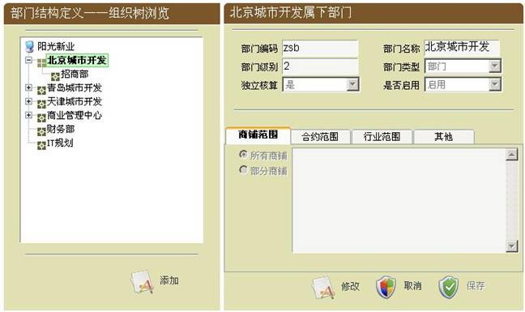
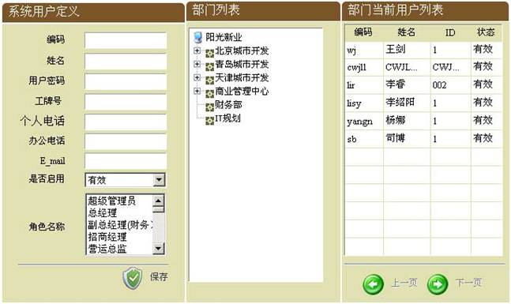
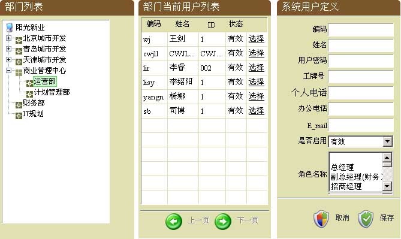
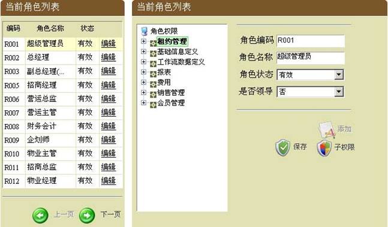
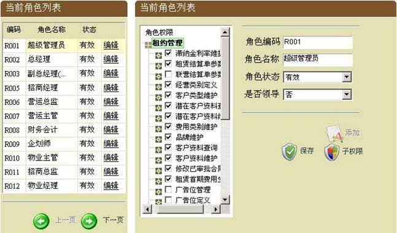
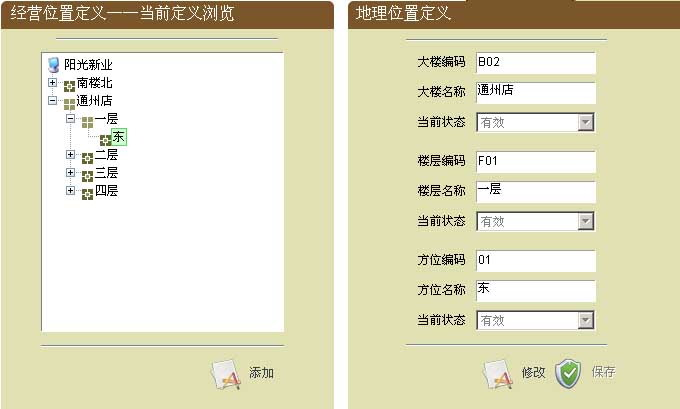
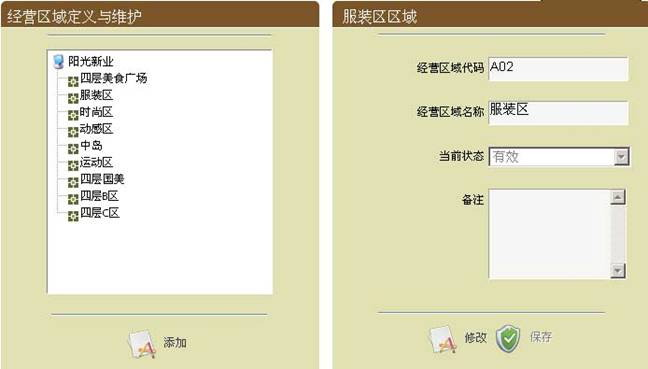
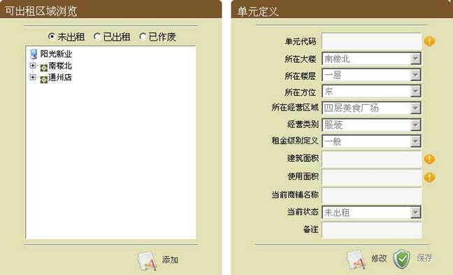

| 基础信息定义 |
| 此功能模块是用来管理系统中基础信息，比如：部门、用户、角色、可出租面积等； |
|
| 部门管理 |
| 从菜单栏中，点击【基础信息定义】->【部门管理】->【部门定义】，即可进入部门定义工作区，对部门进行定义。部门定义如下图： |
 |
| 图(2-1) |
| 部门定义分为两部分，左边显示的树结构为集团所拥有的部门，选择某一部门的时候，界面右侧显示该部门的详细信息。 |
| 在选择某一级别的父节点部门后，点“添加”按钮，窗体右边区域详细部分处于可编辑状态，填写好部门信息后，点“保存”按钮，即可完成对部门的添加。 |
| 需要修改某部门时，在左侧部门树中选择需要修改的部门，再点修改按钮，即右侧区域详细部分处于可编辑状态，再进行修改，点“保存”按钮，即可完成对部门的修改。 |
| 部门的商铺范围、合约范围、行业范围和其他属性是对部门数据权限的设定，建议使用“所有”。 |
| 点“取消”按钮即可取消对该部门详细信息中的操作。 |
|
| 用户定义 |
| >> 增加用户 |
| 此功能模块是用来定义可以使用本系统的用户，从菜单栏中，点击【基础信息定义】->【用户管理】->【增加用户】，即可进入增加用户定义工作区，对用户进行添加。增加用户界面如下图（图2-2）： |
 |
| 图(2-2) |
| 增加用户分为三部分，左边为添加用户详细资料输入区，中间显示的的树结构为集团所属所有的部门，右边为部门的用户列表。选择某一部门的时候，即在右边列表中显示该部门的用户 |
| 在部门列表中选择了需要增加用户的部门后，在系统用户定义区域，填写好用户详细信息，点“保存”按钮，即可完成对用户的添加。 |
|
| >> 修改用户 |
| 此功能模块是用来修改系统用户基本信息，从菜单栏中，点击【基础信息定义】->【用户管理】->【修改用户】，即可进入修改用户定义工作区，对用户进行修改。修改用户如下图（图2-3）： |
 |
| 图(2-3) |
| 修改用户分为三部分，左边显示的树结构为本集团的所有部门，中间为某部门的用户列表，右边为某用户详细资料。选择某一部门的时候，即在中间显示该改部门的用户，再选择某用户时，在右边区域即显示该用户详细信息，并对其编辑，再点“保存”按钮，即可完成对用户基本信息的修改。 |
|
| 角色定义 |
| >> 增加角色 |
| 此功能模块是用来增加系统角色，从菜单栏中，点击【基础信息定义】->【角色管理】->【增加角色】，即可进入角色定义维护工作区，对角色进行添加或维护。增加角色界面如下图（图2-4）： |
 |
| 图(2-4) |
| 增加角色分为两部分，左边是当前角色列表，右边显示的是某一角色所对应的功能列表。 |
| 点“添加”按钮，在右侧输入角色信息和角色权限后，再点“保存”按钮，即可完成对角色的添加。 |
| 当需要维护某一角色的权限或信息时，选择需要维护的角色，再从右边区域即可看到该角色所拥有的权限，再对其功能选择与取消，点“保存”按钮，即可完成对角色权限的修改。如下图（图2-5） |
 |
| 图(2-5) |
|
| 可出租面积 |
| >> 地理位置管理 |
| 此功能模块是用来定义商业项目的物理位置信息，从菜单栏中，点击【可出租面积】->【地理位置管理】，即可进入地理位置定义工作区，对地理位置进行定义。地理位置定义如下图（图2-6）： |
 |
| 图(2-6) |
| 地理位置定义分为两部分，左边显示的树结构为商业项目地理位置，选择某一地理位置的时候，即在右边显示该地理位置的详细信息。 |
| 点“添加”按钮，右边区域详细部分处于可编辑状态，填写好地理位置信息后，点“保存”按钮，即可完成对地理位置的添加。 |
| 一个完整的地理位置包括大楼、楼层和方位属性；在定义地理位置时，需要定位完整的地理位置属性信息。 |
| 需要修改某地理位置时，在左边部门列表中选择需要修改的地理位置，再点修改按钮，即右边区域详细部分处于可编辑状态，再进行修改，点“保存”按钮，即可完成对地理位置的修改。 |
|
| >> 经营区域管理 |
|
此功能模块是用来定义集团所有商业项目的经营区域，从菜单栏中，点击【可出租面积】->【经营区域管理】，即可进入经营区域定义工作区，对经营区域进行定义或维护。经营区域定义如下图（图2-7）： |
 |
| 图(2-7) |
| 经营区域定义分为两部分，左边显示的树结构为集团所定义的经营区域，选择某一经营区域的时候，即在右边显示该经营区域的详细信息。 |
| 点“添加”按钮，右边区域详细部分处于可编辑状态，填写好经营区域信息后，点“保存”按钮，即可完成对经营区域的添加。 |
| 需要修改某经营区域时，在左边部门列表中选择需要修改的经营区域，再点修改按钮，即右边区域详细部分处于可编辑状态，再进行修改，点“保存”按钮，即可完成对经营区域的修改。 |
|
| >> 单元管理 |
|
此功能模块是用来定义所有商业项目的单元信息，从菜单栏中，点击【可出租面积】->【单元管理】，即可进入单元定义维护工作区，对单元进行定义。单元定义如下图（图2-8）： |
 |
| 图(2-8) |
| 单元定义分为两部分，左边显示的树结构为集团商业项目的单元信息，按照未出租、已出租和已作废三种状态进行分类浏览，选择某一单元的时候，即在右边显示该单元的详细信息。 |
| 新建单元时，需要在未出租状态下，选择新建单元所属地理位置，点“添加”按钮，右边区域详细部分处于可编辑状态，填写好单元信息后，点“保存”按钮，即可完成对单元的添加。 |
| 需要修改某单元时，在左边部门列表中选择需要修改的单元，再点修改按钮，即右边区域详细部分处于可编辑状态，再进行修改，点“保存”按钮，即可完成对单元的修改。 |